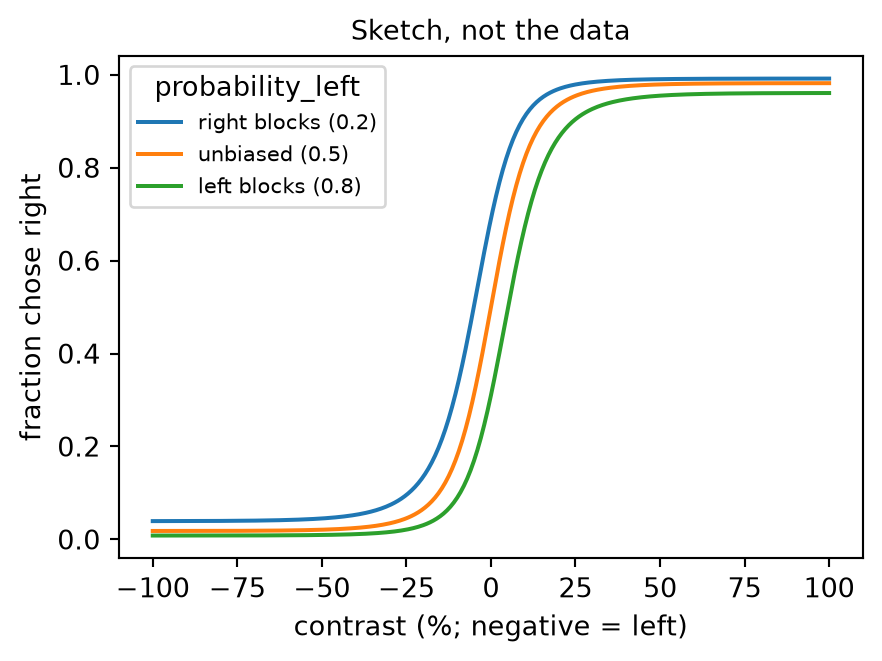
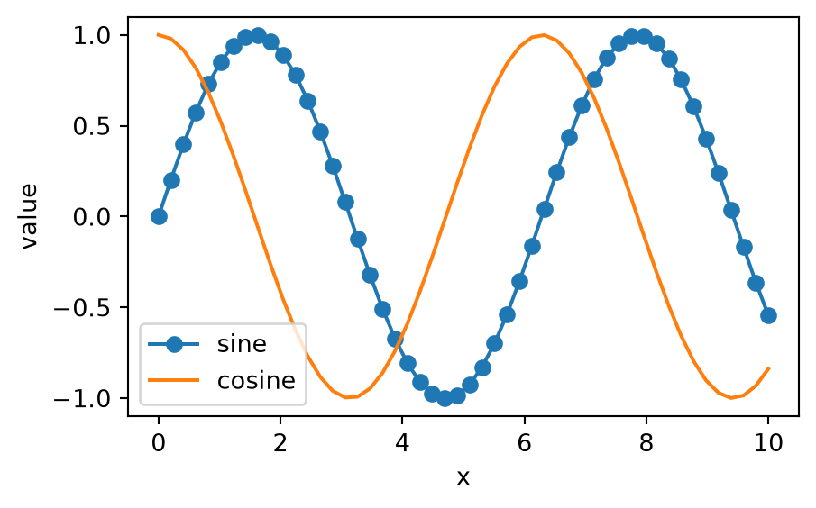

Day 1: Environments, NumPy and SciPy
Introduction to Scientific Python
2026-10-05
Welcome
While we get started: run jupyter lab, open notebooks/day1_01_getting_help.ipynb and run the first cell, the setup check.
Course map
| Day | Before the break | After the break |
|---|---|---|
| 1 | Setup and help · packages and environments · NumPy | SciPy |
| 2 | pandas · Matplotlib | seaborn · scikit-learn · where to go next |
- Two days of 3 hours each
- Today: arrays, and what you compute with them
- Tomorrow: tables, figures of them, and a first model
How the exercises work
- Notebooks live in
notebooks/, numbered by day and block - Cells that say
# Your code hereor Your answer here are for you - Try first, then the docs or a search engine, then an LLM (chat only) if you are stuck
- Stretch exercises are for anyone who finishes early
- Skipping them is fine
Reading a traceback
- Helps you find the source of the error
- Read from the bottom up: error type, then message, then the line that raised it
- Look for the last line that is your code
--------------------------------------------------------------------------- TypeError Traceback (most recent call last) Cell In[1], line 4 1 import numpy as np 2 3 n_points = 100 / 8 ----> 4 x = np.linspace(0, 1, n_points) File ~/work/course-intro-scientific-python/course-intro-scientific-python/.venv/lib/python3.13/site-packages/numpy/_core/function_base.py:123, in linspace(start, stop, num, endpoint, retstep, dtype, axis, device) 27 @array_function_dispatch(_linspace_dispatcher) 28 def linspace(start, stop, num=50, endpoint=True, retstep=False, dtype=None, 29 axis=0, *, device=None): 30 """ 31 Return evenly spaced numbers over a specified interval. 32 (...) 121 122 """ --> 123 num = operator.index(num) 124 if num < 0: 125 raise ValueError( 126 f"Number of samples, {num}, must be non-negative." 127 ) TypeError: 'float' object cannot be interpreted as an integer
Tracebacks through functions
--------------------------------------------------------------------------- ZeroDivisionError Traceback (most recent call last) Cell In[2], line 7 3 4 def call_func(x): 5 y = divide_0(x) 6 ----> 7 z = call_func(10) Cell In[2], line 5, in call_func(x) 4 def call_func(x): ----> 5 y = divide_0(x) Cell In[2], line 2, in divide_0(x) 1 def divide_0(x): ----> 2 return x / 0 ZeroDivisionError: division by zero
- Each block is one function call: the bottom one is where it broke
- Work upwards to find how you got there
Julia Evans, Debugging manifesto.
Getting help
- numpy.org/doc
- Or search for “numpy linspace”
- Examples at the bottom of each page are often the fastest way in
- LLMs can help, but verify the answer with the docs or a search engine
See also SPL, Getting help and finding documentation.
Live coding: getting help
- Start Jupyter Lab and open a notebook
- Look up
np.linspacewithhelp(),?and the online docs - Trigger an error on purpose and read the traceback
- Tab completion:
np.lin<Tab>
Your turn
Open notebooks/day1_01_getting_help.ipynb
- If you haven’t yet: run the setup check, every line should say
OK - Look up the built-in
rangethree ways and answer the questions - Read a traceback through two functions and fix the call
5 minutes. Stretch: section 4, tab completion and searching
Packages and environments
What is a package?
- Collection of modules (Python files) that provide specific functionality
- Can be installed from the Python Package Index (PyPI) or conda-forge
- Dependencies are solved automatically by package managers (pip, conda, uv)
- One of the best and worst things about Python
- Best: huge ecosystem of packages for almost anything
- Worst: packages go out of date, are abandoned, or conflict with each other
Package managers
pipinstalls packages from PyPI, the official Python package indexcondainstalls packages from conda or conda-forge, a community-maintained channeluvinstalls packages from PyPI and manages whole projects (uv pipis a drop-in forpip)
What is an environment?
- An environment is a collection of packages and an interpreter
- Isolated from other environments
- Allows multiple versions of the same package to coexist
- Can be exported and shared or recreated
Why bother?
- Dependency conflicts
- Project A needs
numpy<2, project B needsnumpy>=2.3 - One shared Python means one of them breaks
- Upgrading for one project silently changes the other
- Project A needs
- Reproducibility
- Six months later you need the same versions
- A colleague needs to rebuild your setup from a file
Without environments

xkcd 1987, CC BY-NC 2.5.
Working with environments
- Project-based: environments are tightly coupled to a project
- Typically stored in the project folder (
./.venv) - Managed with
venv+pip, oruv
- Typically stored in the project folder (
- Global or task-based: environments exist globally, easy to share across projects
- Typically stored in a central location (
~/miniforge3/envs/) - Managed with
conda
- Typically stored in a central location (
conda and conda-forge
- conda installs packages and their non-Python dependencies
- C libraries, Qt, CUDA, …
- conda-forge is the community channel where almost everything scientific lives
- Install conda through Miniforge, which uses conda-forge by default
- The course environment
scientific-pythonis a conda environment
Creating an environment
Activating an environment
- Check which Python you are using:
which python(macOS/Linux) orwhere python(Windows)
Cheat sheet: managing packages
| conda | pip | uv | |
|---|---|---|---|
| Install | conda install numpy |
pip install numpy |
uv add numpy |
| Pin a version | conda install tqdm=4.70.1 |
pip install tqdm==4.70.1 |
uv add tqdm==4.70.1 |
| Update | conda update scipy |
pip install -U scipy |
uv lock --upgrade-package scipy, then uv sync |
| List | conda list |
pip list |
uv pip list |
| Remove | conda remove numpy |
pip uninstall numpy |
uv remove numpy |
- Version syntax:
=for conda,==for pip and uv - Install from the terminal, not from inside Python, and activate the environment first
conda env listshows every environment on your machine; the conda cheat sheet has the rest
Terminal tips
Windows: use the Miniforge Prompt. --help on any command; Tab completes names; Up/Down recall history; Ctrl+C cancels; q quits a long output.
Sharing an environment
- Commit the file to your repository with your code
Lockfiles
- An environment file says what you asked for:
numpy=2.5 - A lockfile records the exact version of every package, dependencies included
- Rebuilds the same environment, months later, on another machine
uvwrites one automatically:uv.lockcondaneeds an extra tool (conda-lock)
Your turn
Open notebooks/day1_02_environments.ipynb. The work happens in a terminal.
- conda (12 min): create a scratch environment with pandas, export it, rebuild it under a new name, remove both
- uv (10 min): init a project, add requests, run a script, delete
.venv, rebuild it from the lockfile - Debrief together: which files would you commit?
Warning
Leave the course environment scientific-python alone: only work on the throwaway ones.
NumPy

The scientific Python ecosystem
Domain packages: scikit-image · scikit-learn · napari · MNE · BrainGlobe · astropy · …
Data and plotting: pandas · xarray · dask · Matplotlib · seaborn
Core numerics: NumPy (arrays) · SciPy (algorithms)
Interactive environments: IPython · Jupyter | Python itself
- Almost everything above NumPy takes and returns NumPy arrays
After SPL, Python scientific computing ecosystem.
What is an array?
- A grid of values, all of the same type
- Stored in one block of memory
- Fast: operations run in compiled code, not Python
- Has a shape: how many values along each axis
- 1-D: a time series, 2-D: an image or a table, 3-D: a volume
Lists versus arrays
Creating arrays
array([0, 1, 2, 3, 4, 5])Shape, dimensions and dtype
array([[ 0, 1, 2, 3],
[ 4, 5, 6, 7],
[ 8, 9, 10, 11]])reshapegives the same values a new shape
dtypes
- Every element has the same dtype:
int64,float64,uint8,bool, … - NumPy picks one for you, or you choose with
dtype= - Convert with
.astype()
Indexing and slicing
start:stop:step, stop excluded, counting from 0- Negative indices count from the end
- In 2-D:
a[row, column], and:means “all”
Views and copies
array([[99, 1, 2, 3],
[ 4, 5, 6, 7],
[ 8, 9, 10, 11]])blooks at the same memory asa
- Check with
np.shares_memory(a, b)
In place, or a new array?
- Most NumPy functions return a new array; assignment into
a[...]and+=change it in place
The recording
- A mouse turns a wheel to move a striped patch on a screen to the centre; a correct turn earns a drop of water
- The patch appears left or right, faint or strong: its contrast
- A Neuropixels probe records from 384 sites along 3.8 mm of brain
| Array | Shape | Axes |
|---|---|---|
lfp |
(5000, 384) | time (500 Hz, 10 s), channel |
spike_counts |
(51, 533, 30) | unit, trial, 50 ms bin |
contrast, choice, rt, … |
(533,) | trial |
area, depth_um |
(384,) | channel |
- Channel 0 is the deepest site
International Brain Laboratory, Brain Wide Map, via DANDI (International Brain Laboratory et al. 2026).
Your turn
Open notebooks/day1_03_numpy.ipynb, Part 1: indexing
- The recording from the previous slide, loaded for you in the first cells
- Fetch time windows from chosen channels, and trials from 3-D spike counts
12 minutes. Stretch (section 5): views and copies, a function that changes its input by accident, int16 pitfalls
Universal functions (ufuncs)
- Act element by element, in compiled code
- Arithmetic:
+,-,*,/,** - Maths:
np.sqrt,np.exp,np.log,np.sin,np.abs, … - Comparisons:
<,==, … giveboolarrays
Aggregations and axis
- Also
mean,std,min,max,argmin,argmax,any,all,cumsum np.nanmeanand friends ignore missing values (NaN)
Live coding: aggregations along an axis
- A small “students × tests” table of scores
- Mean per student, best score per test
argmax: which student was bestkeepdims=Trueto keep the shape
Broadcasting
Arrays of different shapes combine by stretching axes of size 1.
Rules, comparing shapes from the right:
- Pad the shorter shape with 1s on the left
- Two sizes match if they are equal, or one of them is 1
- Size-1 axes are stretched to fit
(3, 1)with(4,)→(3, 4)✓(3, 2)with(3,)→ ✗ error
Broadcasting in practice
array([[ 0, 1, 2, 3],
[10, 11, 12, 13],
[20, 21, 22, 23]])np.newaxis(orNone) adds an axis of size 1
Your turn
Open notebooks/day1_03_numpy.ipynb, Part 2: aggregations and broadcasting
- Summarise spike counts (unit × trial × bin) along one axis, or several
- Re-referencing and baseline correction by broadcasting
- Fix a broadcasting error
15 minutes. Stretch: distances between recording sites
Boolean masks
- A comparison gives a
boolarray: a mask
array([False, True, False, False, True])- Combine with
&,|,~(notand/or), with brackets around each comparison
Live coding: masks
- Select values by condition and count them
- Combine conditions
- Replace values in place, or into a new array with
np.where - Masks along an axis with
anyandall
Fancy indexing
- Index with arrays of integers to pick any elements, in any order
- Always returns a copy; assigning through it changes the original
Vectorise instead of looping
- Runs in Python, one element at a time
%timeit: about 70 ms for a million values
- Measure before optimising:
%timeitfor one line,%%timeitfor a whole cell in Jupyter or IPython
PDSH, Profiling and Timing Code. Timings measured on an Apple-silicon laptop; yours will differ.
The psychometric curve

- At each contrast: the fraction of trials on which the mouse chose right
- Contrast 0: nothing to see, so the mouse has to guess
- Blocks: 90 unbiased trials (
probability_left0.5), then the stimulus is on the left 80% of the time (0.8), then on the right 80% (0.2), … - If the block affects its choices, the curve shifts between blocks
- Part 3: compute the curve, block by block, without a loop
Your turn
Open notebooks/day1_03_numpy.ipynb, Part 3: masks and vectorising
- Response times: select trials by condition, and replace outliers with
NaN - Select channels by brain area with masks
- Time a loop against NumPy on the LFP
- The mouse’s psychometric curve, block by block, without a loop
18 minutes. Stretch: fancy indexing, data statistics (after SPL Ex. 23)
Checking your work with a plot

- A column of numbers is hard to judge; a plot is easy
fig, ax = plt.subplots(): a figure with one set of axesax.plot(x, y)draws a line;"o-"adds markers- Labels and a legend, and that’s all for today
- Tomorrow: Matplotlib properly
Your turn
Open notebooks/day1_03_numpy.ipynb, Part 4: check your work with a plot
- Plot the psychometric curve in each kind of block
- Does the picture agree with what you concluded from the numbers?
- Didn’t finish part 3? Copy the part 3c cells from solutions/day1_03_numpy.ipynb
5 minutes
Break
10 minutes
SciPy
What lives where
| Submodule | For |
|---|---|
scipy.signal |
Filtering, spectra, peak finding |
scipy.fft |
Fourier transforms |
scipy.stats |
Distributions, statistical tests |
scipy.optimize |
Fitting (curve_fit), minimising, root finding |
scipy.ndimage |
N-D image filters, morphology, measurements |
import scipy as sp, thensp.signal.butter,sp.stats.ttest_ind, …- Also
interpolate,integrate,linalg,sparse,spatial - Check SciPy before writing an algorithm yourself
Fourier transforms
- Any signal is a sum of waves of different frequencies
- The spectrum shows how much of each frequency there is
- Periodic noise shows up as isolated peaks
- Remove them, then transform back
sp.ffthas the forward and inverse transforms, in 1-D, 2-D and N-D
Your turn
Open notebooks/day1_04_scipy.ipynb, Part 1: filtering with the FFT (after SPL Ex. 42)
- The same idea on real data: find the 60 Hz mains hum (US recording) and its harmonics in the LFP’s spectrum, and remove them
10 minutes
Filtering with scipy.signal
import scipy as sp
fs = 500
t = np.arange(0, 2, 1 / fs)
rng = np.random.default_rng(0)
noisy = np.sin(2 * np.pi * 3 * t) + rng.normal(0, 0.5, t.size)
sos = sp.signal.butter(4, 10, btype="lowpass",
fs=fs, output="sos")
smooth = sp.signal.sosfiltfilt(sos, noisy)
fig, ax = plt.subplots(figsize=(5, 2.5))
ax.plot(t, noisy, color="lightgrey")
ax.plot(t, smooth);
- Design a filter:
butter,iirnotch, … (cut-offs in Hz withfs=) - Apply it:
sosfiltfilt(orfiltfiltforb, a) filtfiltruns forwards then backwards: no delayaxis=filters every channel at once
Your turn
Open notebooks/day1_04_scipy.ipynb, Part 2: filtering with scipy.signal
- A 60 Hz notch filter: what did the FFT version remove that the notch didn’t?
- A 1-30 Hz band-pass filter on one channel, then on all 384, with no loop
- Didn’t finish part 1? Copy its cells from solutions/day1_04_scipy.ipynb: part 2 compares with
cleaned
10 minutes. Stretch: a smoother spectrum with welch, which distribution fits the response times (Ex. 41), 2-D minimisation (Ex. 40)
Exercises adapted from Scientific Python Lectures (Varoquaux et al. 2024).
Wrap-up
- Environments: one per project, described by a committed file
environment.yml, orpyproject.toml+uv.lock
- Arrays: one dtype, a shape, and views versus copies
- Vectorise, don’t loop: ufuncs, aggregations along axes, broadcasting, masks
- SciPy: check it before writing an algorithm; filters take an
axis - Tomorrow: tables with pandas, figures with Matplotlib and seaborn, then a first model with scikit-learn
Exercises adapted from Scientific Python Lectures (Varoquaux et al. 2024) (CC BY 4.0). Further reading in the Python Data Science Handbook (VanderPlas 2016).